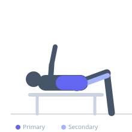

Exercise guide / Reverse Hyperextension
Reverse Hyperextension
The reverse hyperextension trains the posterior chain with the opposite movement pattern from a standard back extension — the torso is fixed and the legs swing posteriorly. This arrangement decompresses the lumbar spine on each lowering phase while loading the glutes and hamstrings concentrically on the ascent. It is considered a low-spinal-load alternative for posterior chain development.
Primary muscles
gluteus maximus
erector spinae
Secondary muscles
biceps femoris long head
semimembranosus
Stabilizers
transverse abdominis
rhomboid major
Equipment
Hyperextension Bench (45°)


Starting position
- Lie face down on a hyperextension bench with the hips at the edge of the pad and the torso supported on the bench. Grip the handles or sides of the bench firmly. Let the legs hang down toward the floor.
Setup
- Position the hyperextension bench so there is room for the legs to swing below and behind the bench. Grip the handles firmly to stabilize the torso.
Steps
- Step 1: Begin with legs hanging down, feet near the floor.
- Step 2: Swing the legs upward and backward by contracting the glutes and hamstrings, raising them to or slightly above the level of the bench.
- Step 3: Hold briefly at the top with glutes squeezed.
- Step 4: Lower the legs in a controlled arc back to the starting position.
- Step 5: Allow gravity to gently decompress the lower spine at the bottom before the next rep.
Coaching cues
- Squeeze the glutes to initiate the lift — do not lead with the knees
- Think of trying to touch the ceiling with your heels
- Let gravity do the work on the way down — stay controlled
Breathing
- Exhale as the legs rise. Inhale as they lower.
Range of motion
- Legs should travel from hanging below the bench up to roughly horizontal or just above. Avoid excessive range.
Tempo
- 1-1-2-0 (1s concentric, 1s hold, 2s eccentric)
Common mistakes
- Using momentum and swinging the legs rather than muscle contraction
- Raising the legs far above horizontal — this compresses the lumbar spine rather than decompressing it
- Failing to grip the bench firmly, allowing the torso to slide
Safety
- Keep the range of motion controlled — stop when legs are roughly parallel to the floor
- This exercise is often cited for its decompressive benefit; however, it should still be performed with control
Training
- hypertrophy: 12–20 reps
- endurance: 20–30 reps
- hypertrophy: 3–4 sets
- endurance: 2–3 sets
- Rest: {'hypertrophy': 60, 'endurance': 30}